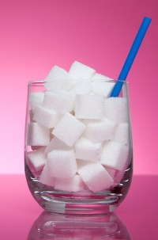

Sugar-sweetened beverage consumption is high in many parts of the world and is suggestive of poor dietary quality, as sugar-sweetened beverages contain added sugars such as sucrose or fructose, often in large amounts, which contribute to the overall energy density of diets. The calories provided by sugar-sweetened beverages have little nutritional value and may not provide the same feeling of fullness that solid food provides. As a result, total energy intake may increase which can lead to unhealthy weight gain.
WHO is asking governments to consider introducing a progressive and sustainable reduction in national sugar intake over the coming 3 to 4 years. Substantial falls in sugar intake are now considered necessary to halt the rise in diabetes and obesity.
WHO recommends that children and adults should consume less than 10%, or preferably 5% (roughly 25 grams per person a day) of free sugars in their diet. In high- and middle-income countries, sugar consumption ranges from 9% to 15%. Even in low-income countries it can be as high as 12%. In some countries, people are consuming more than 85 grams of sugar per person a day.
Children, especially school children and young adults, usually have exceptionally high intakes. Most of the sugars consumed in the Region come from sweets, juices and excessive sugar added to tea –all part of our daily diet. For example, one can of a sugar-sweetened soft drink contains about 40g of sugar, which is higher than the entire recommended amount of sugar for a child in a day.
Points to be considered by decision – makers to minimize sugar intake
- To increase the retail price of soft drinks through taxes.
- Reformulate food products by reducing their sugar content.
- Restrictions on the marketing of unhealthy sugar-rich food and beverages, especially to children.
- Implementing policies to progressively reduce the amount of sugar in products being offered for sale in government-sponsored institutions.
- Restricting promotions, such as offering two products for the price of one or increasing portion sizes for the same price, on sugar-enriched products, especially drinks.
- Using nutritional profiling to establish clear definitions of foods and drinks high in sugar in order that consumers are not misled on the sugar content of products.
- Eliminating sugar subsidies provided by national governments and introducing progressive taxes initially on sugary drinks, and then on other foods rich in sugar.
- Providing routine health education to populations.
- Minimum of a 20% increase in retail price is needed to induce appreciable changes in intake.
- Reduce the content of free sugars in soft drinks. Artificial sweeteners should not be used as a replacement for the reduced free sugar content of food and drinks.
- Develop regional approaches to address the unopposed marketing of unhealthy foods and beverages.
Extra soft drink a day increases the risk of diabetes by nearly a fifth (18%). Obesity rates are also extraordinarily high in both children and adults so sugar intakes, as well as total fat intakes, will need to be reduced.
Sugar intakes are also increasing as national incomes rise. According to WHO guidelines average food and drink intake should correspond to a desirable average sugar intake of less than 28g of sugar daily. children and women should not consume more than about 20–25 g per day and men should not consume more than about 35g per day. Therefore, average sugar intakes should fall by more than 50%.
Major source of sugar for
- Adolescents are Soft drinks (excluding fruit juice), Table sugar, confectionery and fruit juice.
- Younger primary school children are soft drinks, biscuits, buns, cakes, pastries and puddings, breakfast cereals, confectionery and fruit juice.
- Adults are table biscuits, buns, cakes, pastries and puddings, fruit juices and soft drinks